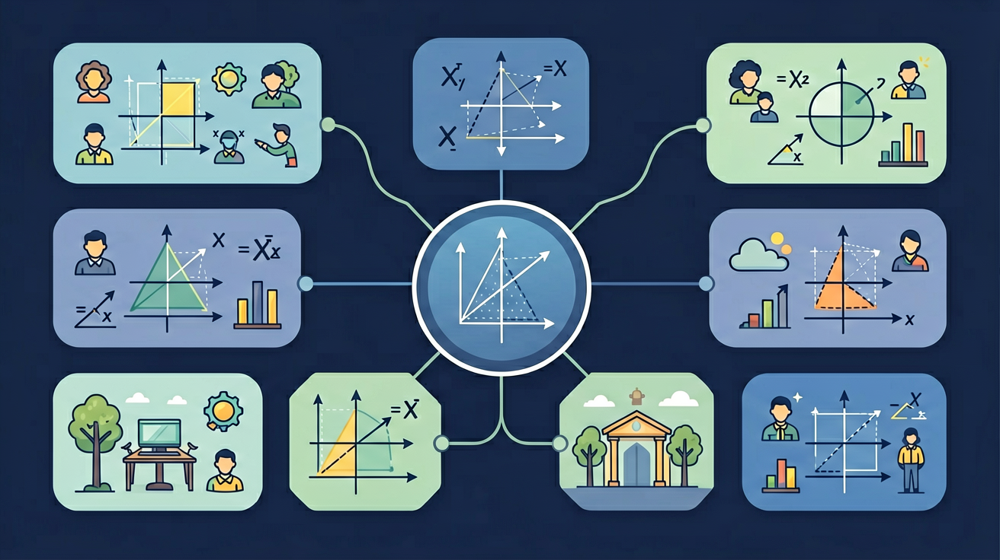

下列哪个数不是有理数？
计算(-2)+5的结果是？
你已经认识了自然数（1, 2, 3, …）和分数（½, ¾, …）。在生活中，我们还会遇到"零下5度"、"亏损3万元"……这些情况需要用负数来表示。
问题来了：自然数、整数、分数、负数……这些数之间有什么联系？它们能统一在一个体系里吗？
数学家把所有"能写成两个整数之比"的数统一称为有理数（Rational Number，其中 rational 来自拉丁语 ratio = 比）。
凡是能写成 p/q（p、q 均为整数，且 q ≠ 0）形式的数，叫做有理数。
注意：分类有两种角度！
有了数，我们需要一种方式来直观展示它们的位置关系。温度计、尺子……这些工具都隐含着一种数的排列方式。
数轴：一条带有刻度、方向和原点的直线，让每个有理数都有"家"。
在数轴上，关于原点对称的两个点表示的数互为相反数。
数轴上，一个数对应的点到原点的距离，叫做该数的绝对值，记作 |a|。
很多同学会混淆：-(-3) = ?，|-3| = ?，这两个运算一样吗？
错误：|−a| = a（这不一定对！）
两个城市之间的距离是绝对值的概念：A在原点，B在-5处，则A到B的距离是 |−5| = 5（公里），距离不分正负！